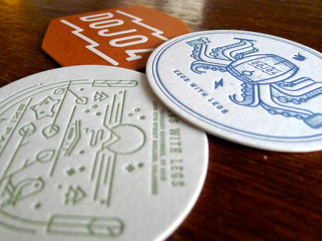
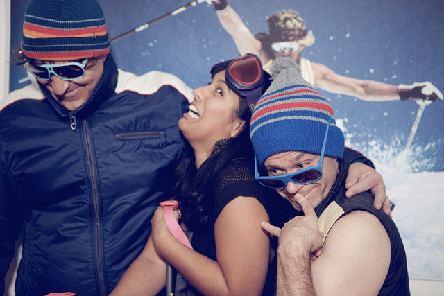
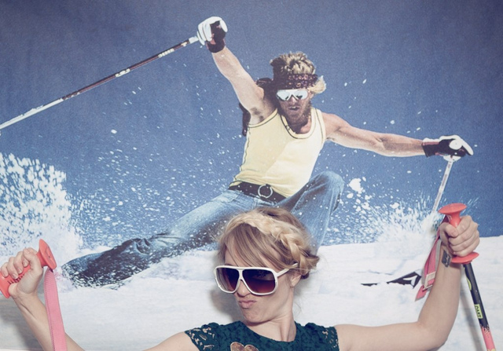
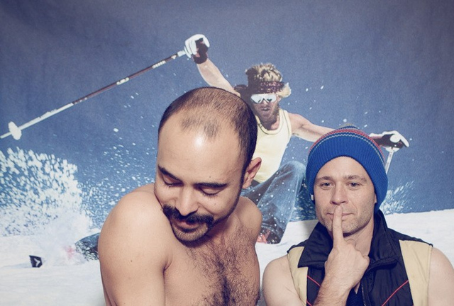
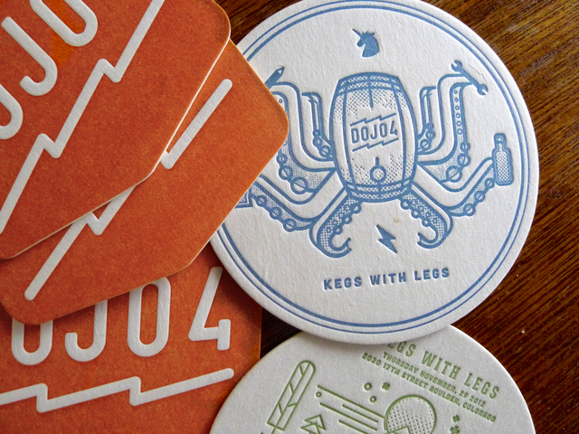
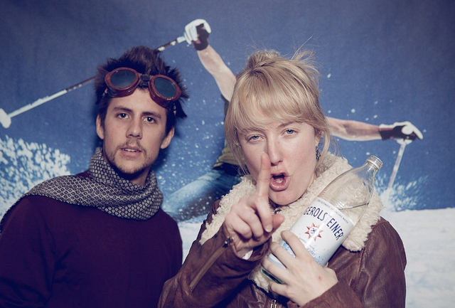
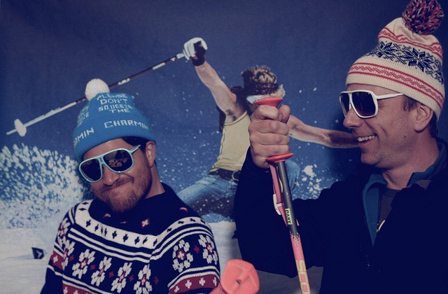
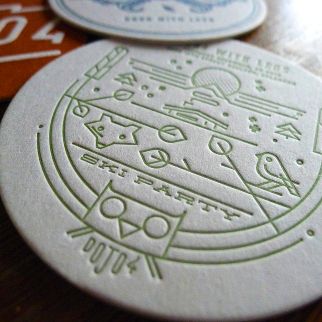

<p>We were honored to host <a href="https://twitter.com/@adclubden"> the Denver Ad Club's</a> <b>Kegs with Legs</b> party November 29, 2012. Snowfall has been minimal here in the Rockies so we decided to do some imitative magic and hold a ski party. We chose the freewheeling 70's ski scene as the theme and it was a blast! We supplied a keg of <a href="https://twitter.com/@AsherBrewing">Asher Brewing</a> Kolsch, <a href="https://twitter.com/@dojo4">dojo4</a> designed letterpress beer coasters, and snacks from the neighborhood artisanal food and wine spot <a href="https://twitter.com/@curedboulder">Cured</a>. We were thrilled to host representatives from some of the most exciting design and tech studios in the Boulder/Denver area including: <a href="https://twitter.com/@vermilion">Vermilion</a>, <a href="https://twitter.com/@goodapples">Goodapples</a>, <a href="https://twitter.com/@castirondsgnco%20">Cast Iron Design</a>, <a href="https://twitter.com/@mondo_robot">Mondo Robot</a>, <a href="https://twitter.com/@nvrvr">NVRVR</a>, <a href="https://twitter.com/@sparkfun">Sparkfun</a>, and <a href="https://twitter.com/@smokeproof">Smokeproof Press</a>.</p>

